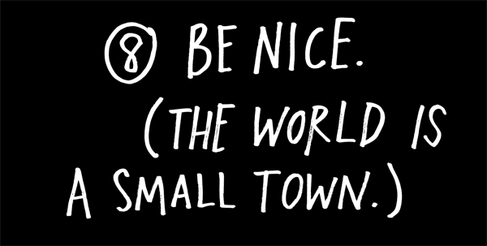
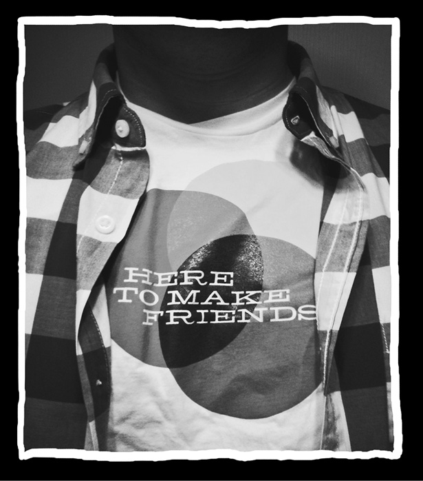
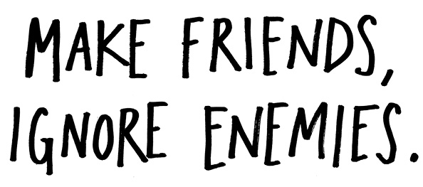
There’s only one reason I’m here: I’m here to make friends.
The golden rule is even more golden in our hyperconnected world. An important lesson to learn: If you talk about someone on the Internet, they will find out. Everybody has a Google alert on their name. The best way to vanquish your enemies on the Internet? Ignore them. The best way to make friends on the Internet?
Say nice things about them.
“There’s only one rule I know of: You’ve got to be kind.”
—Kurt Vonnegut
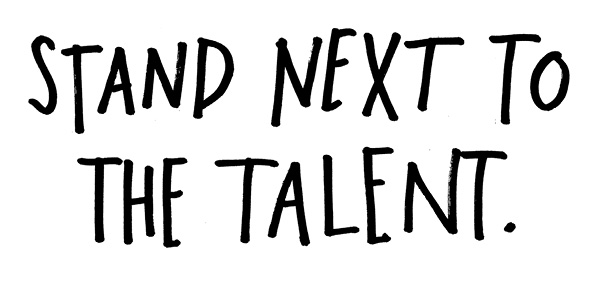
“The only mofos in my circle are people that I can learn from.”
—Questlove
Remember “garbage in, garbage out”? You’re only going to be as good as the people you surround yourself with. In the digital space, that means following the best people online—the people who are way smarter and better than you, the people who are doing the really interesting work. Pay attention to what they’re talking about, what they’re doing, what they’re linking to.
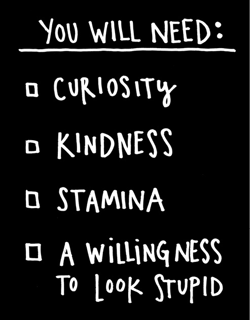
Harold Ramis, the actor and director most famous to people of my generation for his role as Egon in the movie Ghostbusters, once laid out his rule for success: “Find the most talented person in the room, and if it’s not you, go stand next to him. Hang out with him. Try to be helpful.” Ramis was lucky: The most talented person in the room was his friend Bill Murray.
If you ever find that you’re the most talented person in the room, you need to find another room.
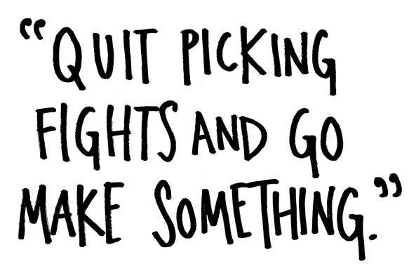
You’re going to see a lot of stupid stuff out there and you’re going to feel like you need to correct it. One time I was up late on my laptop and my wife yelled at me, “Quit picking fights on Twitter and go make something!”
She was right. But anger is one of my favorite creative resources. Henry Rollins has said he is both angry
and curious, and that’s what keeps him moving.
Some mornings, when I can’t wake up, I lie in bed
and read e-mail and Twitter until my blood starts boiling and I get fired up enough to spring out of bed. But instead of wasting my anger on complaining or lashing out at people, I try to channel it into my writing and my drawing.
So go on, get angry. But keep your mouth shut and go do your work.
“Complain about the way other people make software by making software.”
—Andre Torrez
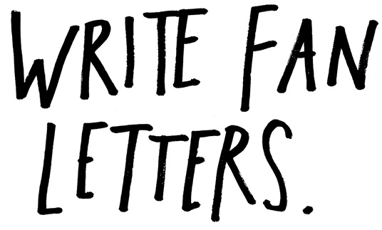
When I was younger, I wrote a lot of fan letters and had the good fortune to hear back from several of my heroes. But I’ve realized that the trouble with fan letters is that there’s built-in pressure for the recipient to respond. A lot of times when we write fan letters we’re looking for a blessing or an affirmation. As my friend Hugh MacLeod says, “The best way to get approval is to not need it.”
If you truly love somebody’s work, you shouldn’t need a response from them. (And if the person you want to write to has been dead for a hundred years, you’re really out of luck.) So, I recommend public fan letters. The Internet is really good for this. Write a blog post about someone’s work that you admire and link to their site. Make something and dedicate it to your hero. Answer a question they’ve asked, solve a problem for them, or improve on their work and share it online.
Maybe your hero will see your work, maybe he or she won’t. Maybe they’ll respond to you, maybe not. The important thing is that you show your appreciation without expecting anything in return, and that you get new work out of the appreciation.
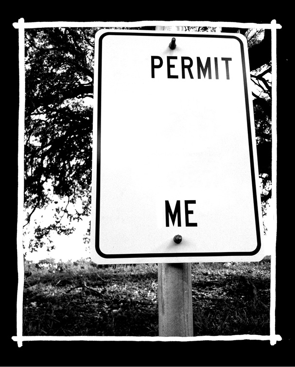
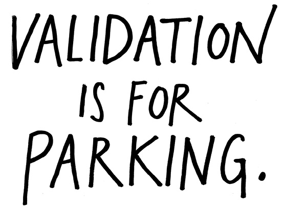
“Modern art = I could do that + Yeah, but you didn’t.”
—Craig Damrauer
The trouble with creative work: Sometimes by the time people catch on to what’s valuable about what you do, you’re either a) bored to death with it, or b) dead. You can’t go looking for validation from external sources. Once you put your work into the world, you have no control over the way people will react to it.
Ironically, really good work often appears to be effortless. People will say, “Why didn’t I think of that?” They won’t see the years of toil and sweat that went into it.
Not everybody will get it. People will misinterpret you and what you do. They might even call you names. So get comfortable with being misunderstood, disparaged, or ignored—the trick is to be too busy doing your work to care.
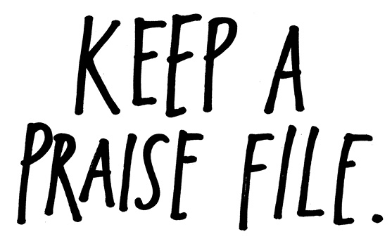
Life is a lonely business, often filled with discouragement and rejection. Yes, validation is for parking, but it’s still a tremendous boost when people say nice things about our work.
Occasionally, I have the good fortune to have something take off online, and for a week or two, I’ll be swimming in Tweets and nice e-mails from people discovering my work. It’s pretty wonderful. And disorienting. And a major high. But I always know that high will taper off, and a few weeks down the road I will have a dark day when I want to quit, when I wonder why the heck I even bother with this stuff.
That’s why I put every really nice e-mail I get in a special folder. (Nasty e-mails get deleted immediately.) When those dark days roll around and I need a boost, I open that folder and read through a couple e-mails. Then I get back to work. Try it: Instead of keeping a rejection file, keep a praise file. Use it sparingly—don’t get lost in past glory—but keep it around for when you need the lift.
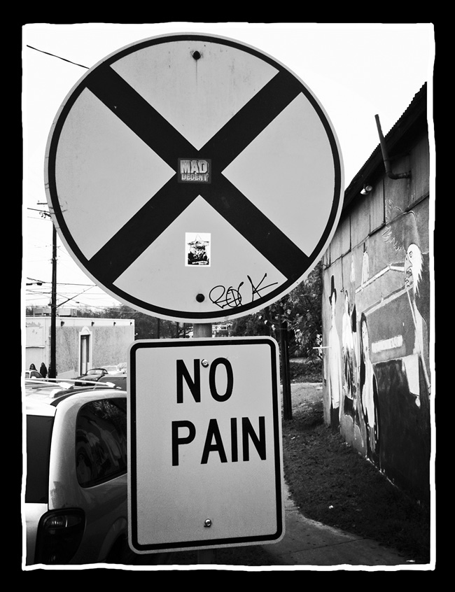